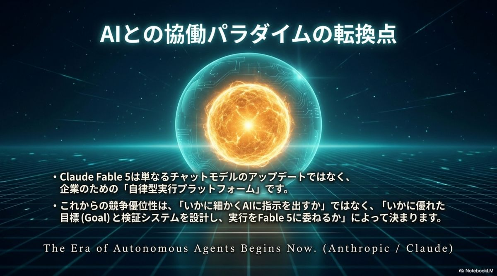

Mythosクラス降臨：
対話する道具から
自律する知能へ
AnthropicがOpus級の上に新たな能力階層「Mythosクラス」を創設した。 一般提供の安全版「Fable 5」と、サイバー防衛・ライフサイエンス向けに封印を解いた限定版「Mythos 5」の二層展開。 タスクが長く複雑になるほど他モデルとの差が幾何級数的に開く——SWE-Bench Pro 80.3%はGPT-5.5（58.6%）を圧倒し、FrontierCodeでは実に5倍差。AIは「応答機」から数日間を走り切る「実行型パートナー」になった。
GPT-5.5（58.6%）を圧倒
GPT-5.5（5.7%）との性能差
（人手見積もり2ヶ月超 · Stripe実測）
14ターゲット中9つで有力候補
自律型AIの新時代「Mythosクラス」の衝撃——全体俯瞰
2026年6月9日の発表は、AIが単なる応答機から「長時間のタスクを自律的に遂行する知的エージェント」へ進化したことを象徴する。圧倒的な実務パフォーマンス・安全性と信頼の設計・利用開始ガイドまで、1枚で俯瞰する。


同じ頭脳、二つの「語り方」：
Fable 5 と Mythos 5
両モデルは同一の強力な基盤モデルを共有し、「セーフガードの有無」で役割が分かれる。名称はラテン語のfabula（語られるもの）とギリシャ語のmythos（神話）に由来——神話級の生の力を、安全に語り継げる形に調整したものが Fable 5 だ。
| 項目 | Claude Fable 5 | Claude Mythos 5 |
|---|---|---|
| 位置づけ | 一般提供される最上位モデル | 信頼済みアクセス・プログラム限定 |
| 安全策 | 高度な安全分類器を実装（常時オン） | 一部セーフガードを解除しフル性能を提供 |
| 主な用途 | 汎用的な高度知識労働、コーディング | サイバー防衛、バイオ医学研究、重要インフラ保護 |
| 提供経路 | Claude API · Bedrock · Vertex AI 等 | Project Glasswing · 特定の研究機関 |

前例のない圧倒的優位性：
差は幾何級数的に開く
回答前に内部で深い推論と自己検証を行う「Adaptive Thinking（適応型思考）」が常時オン。この知能のエンジンが、タスクが長く複雑になるほど他モデルとの性能差を拡大させる設計を支えている。
| ベンチマーク | Fable 5 | Opus 4.8 | GPT-5.5 |
|---|---|---|---|
| SWE-Bench Pro（エージェント型コーディング） | 80.3% | 69.2% | 58.6% |
| FrontierCode Diamond(高難度コーディング) | 29.3% | 13.4% | 5.7%5倍差 |
| Hebbia Finance Benchmark（金融分析） | 最高スコア | — | — |
シニア・リサーチサイエンティスト級の思考力
- 戦略の立案・リソース配分——プロジェクト全体を見渡す判断力
- 誤った信念の修正——途中で前提の誤りに気づき、自ら軌道修正する
- 第一原理に基づく新規出力——複雑なドキュメント推論・図表解釈で顕著な向上


ベンチマークを超えて：
実世界でのブレイクスルー
数字より雄弁なのは実戦の記録だ。Stripeの5,000万行Rubyコードベース移行——人間チームで2ヶ月超の作業——を1日で完遂。視覚・科学・知識労働のすべてで、AIの「できること」の定義が書き換わった。
2ヶ月 → 1日
Stripe実測：5,000万行のRubyコードベース大規模移行を1日で完遂。タスクが長いほど差が開く「持続性」の証明。
視覚だけで世界を攻略
スクリーンショット画像のみからWebアプリのソースコードを完全再構築。地図やステータス補助なしに、生のゲーム画面の視覚理解だけで『ポケットモンスター ファイアレッド』をクリア。
1週間の自律研究
ゲノミクス研究で1週間以上自律作業し数百万の細胞データを解析。設計・訓練したカスタムMLモデルは『Science』誌掲載の最新モデルを100分の1のサイズで凌駕。
「分子生物学において、人間の専門家がOpusクラスよりも約80%の確率で好む、斬新かつ説得力のある科学的仮説を安定して生成する。一部の仮説は独立した他研究室の結果によって後日裏付けられた」— Anthropic ブリーフィング：科学・ライフサイエンスにおける自律研究（2026年6月9日）

知能の経済学：
コストからROIへの転換
価格は入力 $10 / 出力 $50（100万トークンあたり）——従来の Mythos Preview の半額以下だ。「時間単価」ではなく「2ヶ月分の仕事が1日で返る」というROIの物差しで測ったとき、Mythosクラスの経済性は際立つ。
| 項目 | 仕様 | 含意 |
|---|---|---|
| 入力トークン | $10 / 1M tokens | Mythos Preview の半額以下 |
| 出力トークン | $50 / 1M tokens | |
| コンテキストウィンドウ | 1M（100万）トークン | 数日間の非同期タスクを一貫性を保ち完遂 |
| 最大出力上限 | 128k トークン | 大規模成果物の一括生成 |
| 知識カットオフ | 2026年1月 | 最新の技術・市況を反映 |

拒否しない安全設計：
3分類器 × Opus 4.8 フォールバック
強大な能力には多層防御が伴う。Fable 5には3つの領域を監視する別個のAIシステム（安全分類器）が組み込まれ、リスク検知時は応答を拒否するのではなく自動的にOpus 4.8へ処理を引き継ぐ。発生はセッション全体の5%未満、しかもユーザーに明示的に通知される。
サイバーセキュリティ
脆弱性の悪用や、偵察・横展開を含む「エージェント型ハッキング」を検知する。
生物学・化学
生物兵器関連やデュアルユース（軍民両用）リスクのある高度な科学タスクを監視する。
蒸留（Distillation）
モデルの知能を抽出して他国の競合モデル訓練に利用しようとする試みをブロックする。
30日データ保持ポリシー——目的は安全管理に限定
- Mythosクラスはビジネス顧客を含む全トラフィックで30日間のデータ保持が義務付けられる
- 目的は新規ジェイルブレイク手法の検知・誤検知の削減といった安全管理に限定
- このデータが新しいClaudeモデルの訓練に使用されることはない
⚠️ 導入時の確認事項
- ゼロデータ保持（ZDR）を前提とする規制産業は、30日保持と自社データガバナンス規定の整合性を要確認
- Adaptive Thinking は常時オン・無効化不可——トークン消費を見込んだ評価運用を


開発者ワークフローの変革と
戦略的ワークロード・ルーティング
Mythosクラスの真価は「戦略的な大仕事」に投入したときに発揮される。日常タスクは軽量モデルに、数日級の複雑なプロジェクトはFable 5に——ワークロードに応じたルーティング設計が、ROIを最大化する鍵となる。


封印を解かれた潜在能力：
Mythos 5 が拓く最前線
セーフガードを一部解除したMythos 5は、選ばれた守り手だけが扱える「神話級」のフルパワーだ。米国政府等と連携するProject Glasswingを通じ、サイバー防衛者・重要インフラプロバイダーに限定提供される。
Mythos 5 が実証した「神話級」の実績
- Project Glasswing——数千の脆弱性検証とパッチ作成を高速化。サイバー防衛の最前線に配備
- 創薬プロセスの10倍加速——タンパク質設計で14ターゲット中9つの有力候補を特定
- 1週間の自律ゲノミクス研究——『Science』誌掲載モデルを100分の1サイズで凌駕するカスタムMLモデルを自律設計・訓練
- トラステッド・アクセス——今後、審査基準を満たしたサイバー防衛・バイオ医療研究機関向けにプログラムを拡大予定

本日から使える：
〜6/22 は追加費用なしの検証チャンス
Fable 5 は本日より Claude API・AWS Bedrock・GCP Vertex AI・Microsoft Foundry で即日利用可能。プロモーション期間を活用し、自社の最も困難なタスクで自律性を直ちに検証したい。
| 期間 | 提供条件 | アクション |
|---|---|---|
| 本日より | Claude API · AWS Bedrock · GCP Vertex AI · Microsoft Foundry で提供開始 | 即日利用可能 |
| 〜 6月22日 | Pro / Max / Team / Enterprise プランで追加費用なし（プロモーション期間） | 最大の検証チャンス |
| 6月23日 〜 | 需要急増に備え、サブスクリプションでは一時的に利用クレジット（従量課金）が必須に | コスト評価体制を整備 |

「対話型アシスタント」の終わり、
「実行型パートナー」の始まり
Mythosクラスの登場は、AIとの協働パラダイムの転換点だ。Anthropicは「能力の民主化」と「リスクの封じ込め」という困難なバランスを、二層のモデル展開とフォールバック機構という独自アーキテクチャで解いた。この知能は、戦略的な大仕事に投入してこそ真価を発揮する。
圧倒的な能力差
SWE-Bench Pro 80.3%・FrontierCodeで5倍差・2ヶ月の作業を1日に。タスクが長く複雑になるほど、他モデルとの差は幾何級数的に拡大する。
二層の知能展開
安全版 Fable 5 は本日から誰でも。封印解除版 Mythos 5 は Project Glasswing 経由でサイバー防衛・創薬の最前線へ。能力と安全を両取りする設計。
今すぐ動く理由
〜6/22 はサブスクリプションプランで追加費用なし。最も困難なタスクに投入して自律性を検証する——それが Mythosクラスの真価を知る最短路だ。
「Claude Fable 5 および Mythos 5 の登場は、AIが『対話型アシスタント』の枠を超え、高度な専門性と数日間の自律性を備えた『実行型パートナー』へと進化したことを意味している」— Claude Fable 5 / Mythos 5 包括的ブリーフィング（2026年6月9日）
